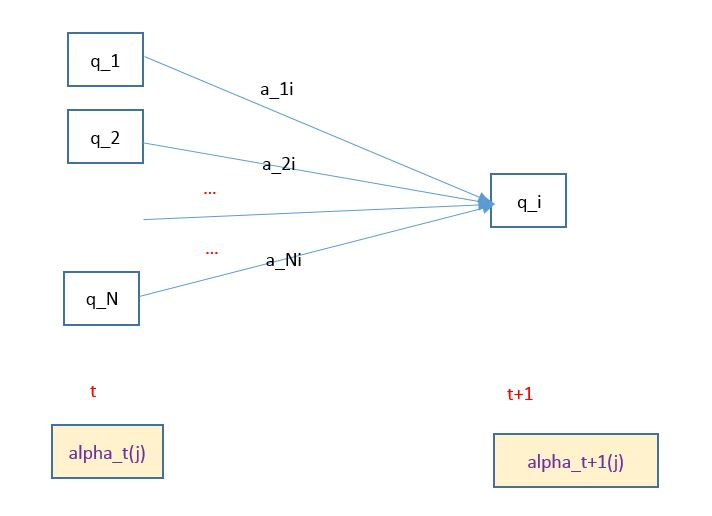
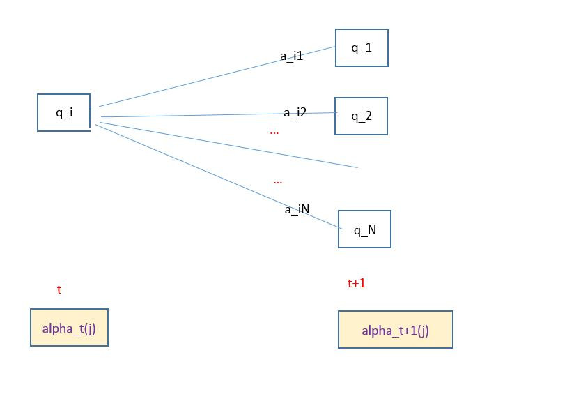
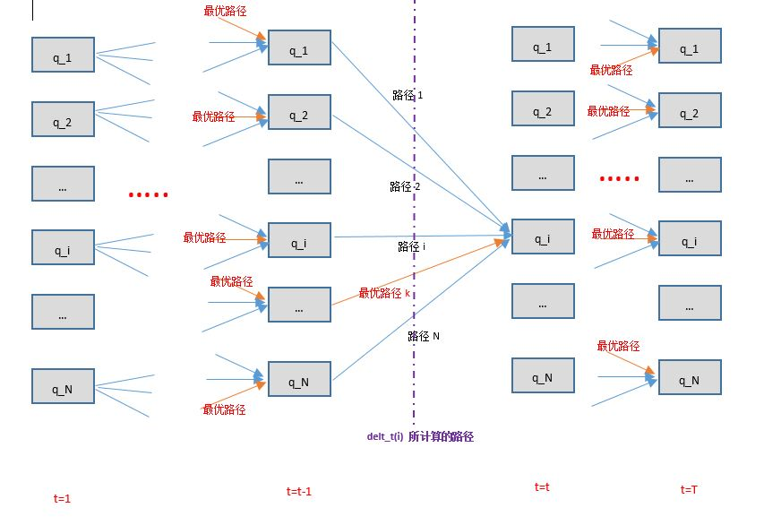
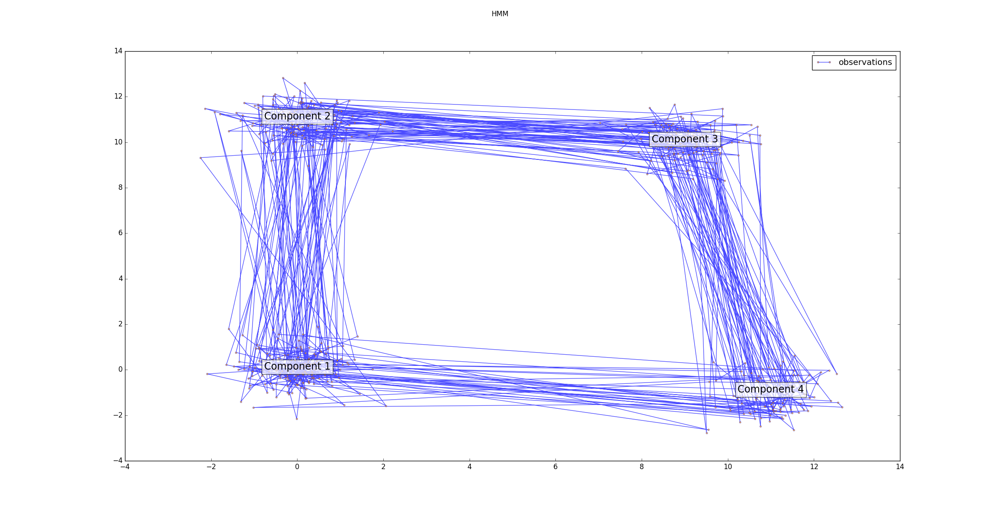

1.隐马尔可夫模型（Hidden Markov model,HMM）是可用于标注问题的统计学模型，描述了由隐藏的马尔可夫链随机生成观察序列的过程，属性生成模型。
2.隐马尔可夫模型：隐马尔可夫模型是关于时序的概率模型，描述由一个隐藏的马尔可夫链随机生成不可观测的状态随机序列，再由各个状态生成一个观察而产生观察随机序列的过程。
3.隐马尔可夫模型由初始概率分布、状态转移概率分布以及观察概率分布确定。隐马尔可夫模型定义如下：
设 \(Q=\{q_1,q_2,\cdots,q_N\}\) 是所有可能的状态的集合， \(V=\{v_1,v_2,\cdots,v_M\}\) 是所有可能的观测的集合，其中 N 是可能的状态数量，M 是可能的观测数量。
Q是状态的取值空间，V是观测的取值空间
设 \(I=(i_1,i_2,\cdots,i_T)\) 是长度为 T 的状态序列， \(O=(o_1,o_2,\cdots,o_T)\) 是对应的观测序列
I 中的每个元素都是一个随机变量，都随机选取 Q 中的值； O 中的每个元素也是一个随机变量，随机选取 V 中的值
设 A 为状态转移概率矩阵 $$A=\begin{bmatrix} a_{11} & a_{12} & \cdots & a_{1N} \\ a_{21} & a_{22} & \cdots & a_{2N} \\ \vdots &\vdots &\vdots&\vdots \\ a_{N1} & a_{N2} & \cdots & a_{NN} \end{bmatrix}$$
其中 \(a_{ij}=P(i_{t+1}=q_j/i_t=q_i),\quad i=1,2,\cdots,N;j=1,2,\cdots,N\)，表示在时刻 t 处于状态 \(q_i\) 的条件下，在时刻 t+1 时刻转移到状态 \(q_j\) 的概率
设 B 为观测概率矩阵 $$B=\begin{bmatrix} b_1(1) & b_1(2) & \cdots & b_1(M) \\ b_2(1) & b_2(2) & \cdots & b_2(M) \\ \vdots &\vdots &\vdots&\vdots \\ b_N(1) & b_N(2) & \cdots & b_N(M) \end{bmatrix}$$
其中 \(b_j(k)=P(o_t=v_k/i_t=q_j),\quad k=1,2,\cdots,M;j=1,2,\cdots,N\)，表示在时刻 t 处于状态 \(q_j\) 的条件下生成观测 \(v_k\) 的概率
\(\pi\) 的各元素之和为1.
4.隐马尔可夫模型\(\lambda\) 可以用三元符号表示，即 \(\lambda=(A,B,\pi)\)，其中 \(A,B,\pi\) 称为隐马尔可夫模型的三要素
5.从定义可知，隐马尔可夫模型做了两个基本假设：
6.隐马尔可夫模型可以用于标注问题。
7.一个长度为 T 的观测序列 \(O=(o_1,o_2,\cdots,o_T)\) 的生成算法：
8.隐马尔可夫模型的3个基本问题：
1.给定隐马尔可夫模型 \(\lambda=(A,B,\pi)\) 和观测序列 \(O=(o_1,o_2,\cdots,o_T)\)，计算在模型 \(\lambda\) 下观测序列 O 出现的概率 \(P(O;\lambda)\)。最直接的方法是按照概率公式直接计算：通过列举所有可能的长度为 T 的状态序列 \(I=(i_1,i_2,\cdots,i_T)\)，求各个状态序列 \(I\) 与观测序列 \(O=(o_1,o_2,\cdots,o_T)\) 的联合概率 \(P(O,I;\lambda)\)，然后对所有可能的状态序列求和，得到 \(P(O;\lambda)\)
对所有可能的状态序列 I 求和，得到观测序列 O 的概率： $$P(O;\lambda)=\sum_I P(O/I;\lambda)P(I;\lambda)\\ =\sum_{i_1,i_2,\cdots,i_T} \pi_{i_1}a_{i_1i_2}a_{i_2i_3}\cdots a_{i_{T-1}i_T}b_{i_1}(o_1)b_{i_2}(o_2)\cdots b_{i_T}(o_T) $$
上式的算法复杂度为 \(O(TN^{T})\)，太复杂，实际应用中不太可行
2.前向概率：给定隐马尔可夫模型 \(\lambda=(A,B,\pi)\)，定义到时刻 t 时，观测序列为 \( o_1,o_2,\cdots,o_t\) 且状态为 \(q_i\) 的概率为前向概率，记作：\(\alpha_t(i)=P(o_1,o_2,\cdots,o_t,i_t=q_i;\lambda)\)
3.观测序列概率的前向算法：
该初值是初始时刻的状态 \(i_1=q_i\) 和观测 \(o_1\) 的联合概率
递推：对于 \(t=1,2,\cdots,T-1\)： $$\alpha_{t+1}(i)=\left[\sum_{j=1}^{N}\alpha_t(j)a_{ji}\right]b_i(o_{t+1}),\quad i=1,2,\cdots,N$$
- \(\alpha_t(j)\) 是在时刻 t 观测到 \( o_1,o_2,\cdots,o_t\) 且在时刻 t 处于状态 \(q_j\) 的前向概率
- \(\alpha_t(j)a_{ji}\) 为在时刻 t 观测到 \( o_1,o_2,\cdots,o_t\) 且在时刻 t 处于状态 \(q_j\) 且在 t+1 时刻达到状态 \(q_i\) 的联合概率。
- 对这个联合概率在时刻 t 的所有可能的 N 个状态 \(q_j\) 求和，结果就是到时刻 t 观测为 \( o_1,o_2,\cdots,o_t\) ，并且在时刻 t+1 时刻处于状态 \(q_i\) 的联合概率
- 方括号里的值与观测概率 \(b_i(o_{t+1})\) 的乘积就是到时刻 t+1 观测到 \( o_1,o_2,\cdots,o_t,o_{t+1}\) ，并且在时刻 t+1 时刻处于状态 \(q_i\) 的前向概率
终止： \(P(O;\lambda)=\sum_{i=1}^{N}\alpha_T(i)\)
因为 \(\alpha_T(i)\) 表示在时刻 T ，观测序列为 \( o_1,o_2,\cdots,o_T\)，且状态为 \(q_i\) 的概率，对所有可能的 N 个状态 \(q_i\) 求和则得到 \(P(O;\lambda)\)

4.前向算法是基于“状态序列的路径结构”递推计算 \(P(O;\lambda)\)。
5.后向概率：给定隐马尔可夫模型 \(\lambda=(A,B,\pi)\)，定义在时刻 t ，状态为 \(q_i\) 的条件下，从时刻 t+1 到 T 的观测序列为观测序列为 \( o_{t+1},o_{t+2},\cdots,o_T \) 的概率为后向概率，记作：\(\beta_t(i)=P(o_{t+1},o_{t+2},\cdots,o_T/i_t=q_i;\lambda)\)
6.观测序列概率的后向算法：
对最终时刻的所有状态 \(q_i\) ，规定 \(\beta_T(i)=1\)
即在时刻 t ，状态为 \(q_i\) 的条件下，从时刻 t+1 到 T 的观测序列为观测序列为 \( o_{t+1},o_{t+2},\cdots,o_T \) 的概率可以这样计算：
- 考虑 t 时刻状态 \(q_i\) 经过 \(a_{ij}\) 转移到 t+1 时刻的状态 \(q_j\)。而状态为 \(q_j\)的条件下，从时刻 t+2 到 T 的观测序列为观测序列为 \( o_{t+2},o_{t+3},\cdots,o_T \) 的概率为 \(\beta_{t+1}(j)\)
- 则 t 时刻状态 \(q_i\) 经过 \(a_{ij}\) 转移到 t+1 时刻的状态 \(q_j\)；从 t+1 时刻的状态，观测序列为 \( o_{t+1},o_{t+2},\cdots,o_T \) 的概率为 \(b_j(o_{t+1})\beta_{t+1}(j)\)
- 考虑所有可能的 \(q_j\)，则得到 \(\sum_{j=1}^{N} a_{ij}b_j(o_{t+1})\beta_{t+1}(j)\)
\(\beta_1(i)\) 为在时刻 1， 状态为 \(q_i\) 的条件下，从时刻 2 到 T的观测序列为 \( o_{2},o_{3},\cdots,o_T \) 的概率。对所有的可能初始状态 \(q_i\) 求和并考虑 \(o_1\) 即可得到观测序列为 \( o_{1},o_{2},\cdots,o_T \) 的概率

7.利用前向概率和后向概率的定义，可以将观测序列概率 \(P(O;\lambda)=\sum_{i=1}^{N}\sum_{j=1}^{N}\alpha_t(i)a_{ij}b_j(o_{t+1})\beta_{t+1}(j),\quad t=1,2,\cdots,T-1\)
8.给定模型 \(\lambda=(A,B,\pi)\)，观测序列 O ，在时刻 t 处于状态 \(q_i\) 的概率记作： \(\gamma_t(i)=P(i_t=q_i/O;\lambda)\)
9.给定模型 \(\lambda=(A,B,\pi)\)，观测序列 O ，在时刻 t 处于状态 \(q_i\) 且在 t+1 时刻处于状态 \(q_j\) 的概率记作： \(\xi_t(i,j)=P(i_t=q_i,i_{t+1}=q_j/O;\lambda)\)
9.一些期望值：
在观测 O 下，从状态 i 转移的期望值： \(\sum_{t=1}^{T-1}\gamma_t(i)\)
因为时刻 T 的状态假若为 \(q_i\)，则此时不可能再转移，因为时间最大为 T
这里的转移，表示状态 i 可能转移到任何可能的状态
在观测 O 下，由状态 i 转移到状态 j 的期望值： \(\sum_{t=1}^{T-1}\xi_t(i,j)\)
1.根据训练数据是包括观测序列和对应的状态序列，还是只有观测序列，隐马尔可夫模型的学习分别由监督学习和非监督学习实现。
2.监督学习方法：假设已给定训练数据包含 S 个长度相同（假设长度为 T ） 的观测序列和对应的状态序列 \(\{(O_1,I_1),(O_2,I_2),\cdots,(O_S,I_S)\}\) ， 则可以利用极大似然估计来估计隐马尔可夫模型的参数：
其中每个 \(O_k,I_k,\quad k=1,2,\cdots,S\) 均为长度为 T 的序列
M 为所有可能的观测的集合的大小；N为所有可能的状态的集合的大小
监督学习需要使用训练数据，由于训练数据需要人工标注而且人工标注训练数据往往代价很高，因此有时会利用非监督学习的方法。
3.Baum-Welch算法：
假设给定训练数据只包含 S 个长度为 T 的观测序列 \(\{O_1,O_2,\cdots,O_S\}\) 但是没有对应的状态序列，目标是学习隐马尔可夫模型 \(\lambda=(A,B,\pi)\) 的参数。
我们将观测序列数据看作观测数据 O ， 状态序列数据看作不可观测的隐数据 I ，那么隐马尔可夫模型事实上是一个含有隐变量的概率模型： \(P(O;\lambda)=\sum_I P(O/I;\lambda)P(I;\lambda)\)。它的参数学习可以由 EM 算法实现：
其中 \(\bar \lambda \) 是隐马尔可夫模型参数的当前估计值
EM 算法的 M 步：极大化 Q 函数 \(Q(\lambda,\bar \lambda)\) ，求模型参数 \(A,B,\pi\)
由于极大化参数在 Q 函数中单独的出现在3个项中，所以只需要对各项分别极大化：
4.利用 \(\gamma_t(i),\xi_t(i,j)\)，则 Baum-Welch模型参数估计为：
$$
a_{ij}=\frac{\sum_{t=1}^{T-1}\xi_t(i,j)}{\sum_{t=1}^{T-1}\gamma_t(i)}\\
b_j(k)=\frac{\sum_{t=1,o_t=v_k}^{T}\gamma_t(i)}{\sum_{t=1}^{T}\gamma_t(i)}\\
\pi_i=\gamma_1(i)
$$
5.Baum-Welch算法：
1.近似算法：
- 近似算法是局部最优（每个点最优），但是不是整体最优的
- 近似算法无法处理这种情况： 转移概率为 0 。因为近似算法没有考虑到状态之间的迁移
2.维特比算法：维特比算法用动态规划来求解隐马尔可夫模型预测问题。它用动态规划求解概率最大路径（最优路径），这时一条路径对应着一个状态序列。
它就是算法导论中《动态规划》一章提到的“最优子结构”
则根据定义，得到变量 \(\delta\)的递推公式： $$\delta_{t+1}(i)=\max_{i_1,i_2,\cdots,i_{t}} P(i_{t+1}=i,i_{t},\cdots,i_1,o_{t+1},\cdots,o_1;\lambda)\\ =\max_{1 \le j \le N} \left[\delta_t(j)a_{ji}\right]b_i(o_{t+1}),\quad i=1,2,\cdots,N;t=1,2,\cdots,T-1$$
即最优路径中，最后一个结点（其实就是 \(q_i\) 结点） 的前一个结点

3.维特比算法：
1.scikit-learn 0.17之后就不再支持隐马尔可夫模型，而是将其独立拎出来作为单独的包。其中：
hmmlearn：无监督隐马尔可夫模型seqlearn:监督隐马尔可夫模型2.hmmlearn中有三种隐马尔可夫模型:GaussianHMM、GMMHMM、MultinomialHMM
3.GaussianHMM
class hmmlearn.hmm.GaussianHMM(n_components=1, covariance_type='diag', min_covar=0.001,
startprob_prior=1.0, transmat_prior=1.0, means_prior=0, means_weight=0,
covars_prior=0.01, covars_weight=1, algorithm='viterbi', random_state=None,
n_iter=10, tol=0.01,verbose=False, params='stmc', init_params='stmc')
高斯分布的隐马尔可夫模型
n_components：一个整数，指定了状态的数量covariance_type：一个字符串，指定了使用方差类型。可以为：
'spherical'：each state uses a single variance value that applies to all features'diag'：each state uses a diagonal covariance matrix'full'：each state uses a full (i.e. unrestricted) covariance matrix'tied'：all states use the same full covariance matrixmin_covar：一个浮点数。给出了方差矩阵对角线上元素的最小值，用于防止过拟合startprob_prior：一个数组，形状为(n_components, )。初始状态的先验概率分布transmat_prior：一个数字，形状为(n_components, n_components )。先验的状态转移矩阵algorithm：一个字符串。指定了Decoder算法。可以为 'viterbi'（维特比算法）或者'map'random_state：一个整数（作为随机数生成器种子）或者RandomState或者None。该随机数用于混洗输入样本n_iter：一个整数。指定最大的迭代次数tol：一个浮点数。指定收敛的阈值。EM算法会在最大似然函数的增量小于该值时停止迭代verbose：布尔值。如果是True，则每轮迭代的收敛报告会打印出来。你也可以查看monitor_来诊断收敛性params：一个字符串。控制在训练过程中，哪些参数能够得到更新（你也可以指定它们的组合形式）：
's':初始概率't':转移概率'm':均值'c'：偏差init_params：一个字符串。控制在训练之前，先初始化哪些参数（你也可以指定它们的组合形式）：
's':初始概率't':转移概率'm':均值'c'：偏差n_features：一个整数，特征维度monitor_：一个ConvergenceMonitor对象，可用它检查EM算法的收敛性transmat_：一个矩阵，形状为 (n_components, n_components)，是状态之间的转移概率矩阵startprob_：一个数组，形状为(n_components, )，是初始状态的概率分布means_：一个数组，形状为(n_components,n_features )，每个状态的均值参数covars_：一个数组，每个状态的方差参数，其形状取决于方差类型：
'spherical'：形状为(n_components, )'diag'：形状为(n_components,n_features )'full'：形状为(n_components, n_features, n_features)'tied'：形状为(n_features,n_features )decode(X, lengths=None, algorithm=None)：已知观测序列X,寻找最可能的状态序列
X：一个array-like，形状为 (n_samples, n_features)。指定了观测的样本lengths：一个array-like，形状为 (n_sequences, )。指定了观测样本中，每个观测序列的长度，其累加值必须等于n_samples
假设有100个观测样本，那么可能有5个观测序列，每个序列的长度为20，那么
lengths为[20,20,20,20,20]
algorithm：一个字符串，指定解码算法。必须是'viterbi'（维特比）或者'map'。如果未指定，则使用构造函数中的decoder参数。logprob:浮点数，代表产生的状态序列的对数似然函数。state_sequence：一个数组，形状为(n_samples, )，代表状态序列。fit(X, lengths=None):根据观测序列 X，来训练模型参数。在训练之前会执行初始化的步骤。如果你想避开这一步，那么可以在构造函数中通过提供init_params关键字参数来避免
X：一个array-like，形状为 (n_samples, n_features)。指定了观测的样本lengths：一个array-like，形状为 (n_sequences, )。指定了观测样本中，每个观测序列的长度，其累加值必须等于n_samples
假设有100个观测样本，那么可能有5个观测序列，每个序列的长度为20，那么
lengths为[20,20,20,20,20]
返回self
predict(X, lengths=None):已知观测序列X,寻找最可能的状态序列
X：一个array-like，形状为 (n_samples, n_features)。指定了观测的样本lengths：一个array-like，形状为 (n_sequences, )。指定了观测样本中，每个观测序列的长度，其累加值必须等于n_samples
假设有100个观测样本，那么可能有5个观测序列，每个序列的长度为20，那么
lengths为[20,20,20,20,20]
state_sequence：一个数组，形状为(n_samples, )，代表状态序列。predict_proba(X, lengths=None)：计算每个状态的后验概率
X：一个array-like，形状为 (n_samples, n_features)。指定了观测的样本lengths：一个array-like，形状为 (n_sequences, )。指定了观测样本中，每个观测序列的长度，其累加值必须等于n_samples
sample(n_samples=1, random_state=None)：从当前模型中生成随机样本
n_samples：生成样本的数量random_state：一个整数（随机数种子）或者RandomState实例。如果为None，则使用构造函数中的random_stateX：观测序列，长度为n_samplesstate_sequence：状态序列n_samplesscore(X, lengths=None)：计算预测结果的对数似然函数
X：一个array-like，形状为 (n_samples, n_features)。指定了观测的样本lengths：一个array-like，形状为 (n_sequences, )。指定了观测样本中，每个观测序列的长度，其累加值必须等于n_samplesX 预测的对数似然函数4.GMMHMM
hmmlearn.hmm.GMMHMM(n_components=1, n_mix=1, startprob_prior=1.0, transmat_prior=1.0,
covariance_type='diag', covars_prior=0.01, algorithm='viterbi', random_state=None,
n_iter=10, tol=0.01, verbose=False, params='stmcw', init_params='stmcw')
混合高斯分布的隐马尔可夫模型
n_components：一个整数，指定了状态的数量n_mix：一个整数，指定了混合高斯分布中的分模型数量covariance_type：一个字符串，指定了使用方差类型。可以为：
'spherical'：each state uses a single variance value that applies to all features'diag'：each state uses a diagonal covariance matrix'full'：each state uses a full (i.e. unrestricted) covariance matrix'tied'：all states use the same full covariance matrixstartprob_prior：一个数组，形状为(n_components, )。初始状态的先验概率分布transmat_prior：一个数字，形状为(n_components, n_components )。先验的状态转移矩阵algorithm：一个字符串。指定了Decoder算法。可以为 'viterbi'（维特比算法）或者'map'random_state：一个整数（作为随机数生成器种子）或者RandomState或者None。该随机数用于混洗输入样本n_iter：一个整数。指定最大的迭代次数tol：一个浮点数。指定收敛的阈值。EM算法会在最大似然函数的增量小于该值时停止迭代verbose：布尔值。如果是True，则每轮迭代的收敛报告会打印出来。你也可以查看monitor_来诊断收敛性params：一个字符串。控制在训练过程中，哪些参数能够得到更新（你也可以指定它们的组合形式）：
's':初始概率't':转移概率'm':均值'c'：偏差init_params：一个字符串。控制在训练之前，先初始化哪些参数（你也可以指定它们的组合形式）：
's':初始概率't':转移概率'm':均值'c'：偏差monitor_：一个ConvergenceMonitor对象，可用它检查EM算法的收敛性transmat_：一个矩阵，形状为 (n_components, n_components)，是状态之间的转移概率矩阵startprob_：一个数组，形状为(n_components, )，是初始状态的概率分布gmms_：一个列表，指定了每个状态的混合高斯分布的分模型decode(X, lengths=None, algorithm=None)：已知观测序列X,寻找最可能的状态序列
X：一个array-like，形状为 (n_samples, n_features)。指定了观测的样本lengths：一个array-like，形状为 (n_sequences, )。指定了观测样本中，每个观测序列的长度，其累加值必须等于n_samples
假设有100个观测样本，那么可能有5个观测序列，每个序列的长度为20，那么
lengths为[20,20,20,20,20]
algorithm：一个字符串，指定解码算法。必须是'viterbi'（维特比）或者'map'。如果未指定，则使用构造函数中的decoder参数。logprob:浮点数，代表产生的状态序列的对数似然函数。state_sequence：一个数组，形状为(n_samples, )，代表状态序列。fit(X, lengths=None):根据观测序列 X，来训练模型参数。在训练之前会执行初始化的步骤。如果你想避开这一步，那么可以在构造函数中通过提供init_params关键字参数来避免
X：一个array-like，形状为 (n_samples, n_features)。指定了观测的样本lengths：一个array-like，形状为 (n_sequences, )。指定了观测样本中，每个观测序列的长度，其累加值必须等于n_samples
假设有100个观测样本，那么可能有5个观测序列，每个序列的长度为20，那么
lengths为[20,20,20,20,20]
返回self
predict(X, lengths=None):已知观测序列X,寻找最可能的状态序列
X：一个array-like，形状为 (n_samples, n_features)。指定了观测的样本lengths：一个array-like，形状为 (n_sequences, )。指定了观测样本中，每个观测序列的长度，其累加值必须等于n_samples
假设有100个观测样本，那么可能有5个观测序列，每个序列的长度为20，那么
lengths为[20,20,20,20,20]
state_sequence：一个数组，形状为(n_samples, )，代表状态序列。predict_proba(X, lengths=None)：计算每个状态的后验概率
X：一个array-like，形状为 (n_samples, n_features)。指定了观测的样本lengths：一个array-like，形状为 (n_sequences, )。指定了观测样本中，每个观测序列的长度，其累加值必须等于n_samples
sample(n_samples=1, random_state=None)：从当前模型中生成随机样本
n_samples：生成样本的数量random_state：一个整数（随机数种子）或者RandomState实例。如果为None，则使用构造函数中的random_stateX：观测序列，长度为n_samplesstate_sequence：状态序列n_samplesscore(X, lengths=None)：计算预测结果的对数似然函数
X：一个array-like，形状为 (n_samples, n_features)。指定了观测的样本lengths：一个array-like，形状为 (n_sequences, )。指定了观测样本中，每个观测序列的长度，其累加值必须等于n_samplesX 预测的对数似然函数5.MultinomialHMM
class hmmlearn.hmm.MultinomialHMM(n_components=1, startprob_prior=1.0,
transmat_prior=1.0, algorithm='viterbi', random_state=None, n_iter=10, tol=0.01,
verbose=False, params='ste', init_params='ste')
多项式分布的隐马尔可夫模型
n_components：一个整数，指定了状态的数量startprob_prior：一个数组，形状为(n_components, )。初始状态的先验概率分布transmat_prior：一个数字，形状为(n_components, n_components )。先验的状态转移矩阵algorithm：一个字符串。指定了Decoder算法。可以为 'viterbi'（维特比算法）或者'map'random_state：一个整数（作为随机数生成器种子）或者RandomState或者None。该随机数用于混洗输入样本n_iter：一个整数。指定最大的迭代次数tol：一个浮点数。指定收敛的阈值。EM算法会在最大似然函数的增量小于该值时停止迭代verbose：布尔值。如果是True，则每轮迭代的收敛报告会打印出来。你也可以查看monitor_来诊断收敛性params：一个字符串。控制在训练过程中，哪些参数能够得到更新（你也可以指定它们的组合形式）：
's':初始概率't':转移概率'm':均值'c'：偏差init_params：一个字符串。控制在训练之前，先初始化哪些参数（你也可以指定它们的组合形式）：
's':初始概率't':转移概率'm':均值'c'：偏差n_features：一个整数，特征维度monitor_：一个ConvergenceMonitor对象，可用它检查EM算法的收敛性transmat_：一个矩阵，形状为 (n_components, n_components)，是状态之间的转移概率矩阵startprob_：一个数组，形状为(n_components, )，是初始状态的概率分布emissionprob_：一个数组，形状为(n_components, n_features)，Probability of emitting a given symbol when in each statedecode(X, lengths=None, algorithm=None)：已知观测序列X,寻找最可能的状态序列
X：一个array-like，形状为 (n_samples, n_features)。指定了观测的样本lengths：一个array-like，形状为 (n_sequences, )。指定了观测样本中，每个观测序列的长度，其累加值必须等于n_samples
假设有100个观测样本，那么可能有5个观测序列，每个序列的长度为20，那么
lengths为[20,20,20,20,20]
algorithm：一个字符串，指定解码算法。必须是'viterbi'（维特比）或者'map'。如果未指定，则使用构造函数中的decoder参数。logprob:浮点数，代表产生的状态序列的对数似然函数。state_sequence：一个数组，形状为(n_samples, )，代表状态序列。fit(X, lengths=None):根据观测序列 X，来训练模型参数。在训练之前会执行初始化的步骤。如果你想避开这一步，那么可以在构造函数中通过提供init_params关键字参数来避免
X：一个array-like，形状为 (n_samples, n_features)。指定了观测的样本lengths：一个array-like，形状为 (n_sequences, )。指定了观测样本中，每个观测序列的长度，其累加值必须等于n_samples
假设有100个观测样本，那么可能有5个观测序列，每个序列的长度为20，那么
lengths为[20,20,20,20,20]
返回self
predict(X, lengths=None):已知观测序列X,寻找最可能的状态序列
X：一个array-like，形状为 (n_samples, n_features)。指定了观测的样本lengths：一个array-like，形状为 (n_sequences, )。指定了观测样本中，每个观测序列的长度，其累加值必须等于n_samples
假设有100个观测样本，那么可能有5个观测序列，每个序列的长度为20，那么
lengths为[20,20,20,20,20]
state_sequence：一个数组，形状为(n_samples, )，代表状态序列。predict_proba(X, lengths=None)：计算每个状态的后验概率
X：一个array-like，形状为 (n_samples, n_features)。指定了观测的样本lengths：一个array-like，形状为 (n_sequences, )。指定了观测样本中，每个观测序列的长度，其累加值必须等于n_samples
sample(n_samples=1, random_state=None)：从当前模型中生成随机样本
n_samples：生成样本的数量random_state：一个整数（随机数种子）或者RandomState实例。如果为None，则使用构造函数中的random_stateX：观测序列，长度为n_samplesstate_sequence：状态序列n_samplesscore(X, lengths=None)：计算预测结果的对数似然函数
X：一个array-like，形状为 (n_samples, n_features)。指定了观测的样本lengths：一个array-like，形状为 (n_sequences, )。指定了观测样本中，每个观测序列的长度，其累加值必须等于n_samplesX 预测的对数似然函数6.实例
import numpy as np
import matplotlib.pyplot as plt
from hmmlearn import hmm
######## 初始条件 ############
startprob = np.array([0.6, 0.3, 0.1, 0.0]) # 先验概率分布
transmat = np.array([[0.7, 0.2, 0.0, 0.1], # 初始转移矩阵
[0.3, 0.5, 0.2, 0.0],
[0.0, 0.3, 0.5, 0.2],
[0.2, 0.0, 0.2, 0.6]])
means = np.array([[0.0, 0.0], # 每个状态都是一个随机变量，服从正态分布。这里是均值
[0.0, 11.0],
[9.0, 10.0],
[11.0, -1.0]])
covars = .5 * np.tile(np.identity(2), (4, 1, 1)) # 每个分量的方差
############ 创建 HMM ############
model = hmm.GaussianHMM(n_components=4, covariance_type="full")
# .fit 方法理论上可以跳过，因为我们手动设置了HMM的属性。但是如果没有这一步，scikit-learn报错
X=np.random.randint(0,100,(100,2))
model.fit(X,lengths=[25,25,25,25])
model.transmat_ = transmat ## 我们既可以在构造函数中设置，也可以通过属性设置
model.means_ = means
model.covars_ = covars
########## 生成模型 #########
X, Z = model.sample(500) ## X为观察序列，Z为状态序列
########### 绘图 ##########
fig=plt.figure()
ax=fig.add_subplot(1,1,1)
ax.plot(X[:, 0], X[:, 1], ".-", label="observations", ms=6, mfc="orange", alpha=0.7)
####### 绘制文字########
for i, m in enumerate(means):
ax.text(m[0], m[1], 'Component %i' % (i + 1),
size=17, horizontalalignment='center',
bbox=dict(alpha=.7, facecolor='w'))
ax.legend(loc='best')
fig.suptitle("HMM")
plt.show()

7.seqlearn:它扩展了scikit-learn的功能，实现了隐马尔可夫模型的监督学习。其中监督学习的意思是：每一个观察序列都被正确的人工标定
8.监督学习的MultinomialHMM模型：
seqlearn.hmm.MultinomialHMM(decode='viterbi', alpha=0.01)
decode一个字符串。指定解码算法。可以为：
'bestfirst'：最大后验概率算法'viterbi'：维特比算法alpha:一个浮点数，用于平滑参数fit(X, y, lengths)：训练数据。其中lengths是个整数列表，它将样本切分成多个序列，它指定的就是每个序列的长度